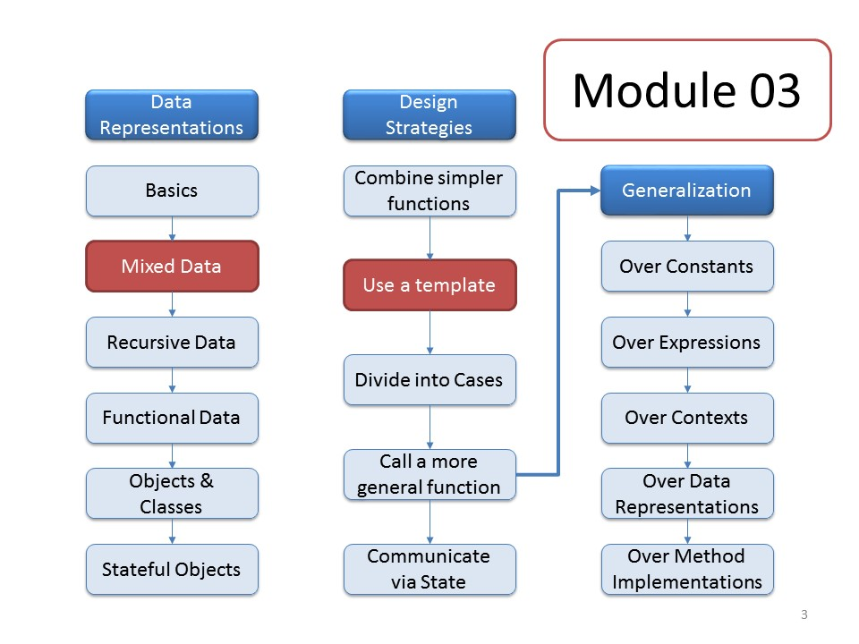

CS 5010 Module 03
Module Overview
This week you will learn about the System Design Recipe and the Iterative Design Recipe, which
give you a roadmap to designing systems that are larger than a few
functions. To design a system iteratively means to design it by
starting with a simple base and then adding new features one at a
time. The iterative design recipe gives a recipe for adding a new
feature to an existing system.
The System Design Recipe says
- Write a purpose statement for your system
- Design data to represent the relevant information in the
world
- Make a wishlist of "main functions". Write down their contracts
and purpose statements.
- Design the individual functions. Maintain a wishlist of
functions you will need to write.
The Iterative Design Recipe says
- Perform information analysis for the new feature
- Modify data definitions as needed
- Update existing functions to work with the new data
definitions
- Write a wishlist of functions for the new feature
- Design the new functions following the Function Design
Recipe
- Repeat for the next new feature
We will study this pattern in the context of
the 2htdp/universe module, which
allows us to create interactive animations. You will learn:
- How to identify the relevant information for an interactive animation
- How to design the data to represent that information
- How to use structural decomposition to guide the development of
programs involving multiple data definitions
- How to add new functionality to a working program using the
Iterative Design Recipe
Course Map

Here's another view that shows how all this fits in to the course
principles:

Readings
Prologue and Part I from the textbook, which cover an
introduction to programming, fixed-size data, and the Basic Student
Language in Racket.
Resources
- The examples for this week are in the Examples folder, as
usual.
- Something about sprints and user stories
Lessons
Problem Set
Problem Set 03
Last modified: Mon Aug 1 16:21:37 Eastern Daylight Time 2016